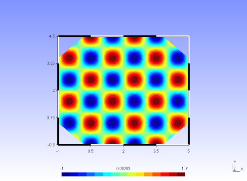

Usage: helmholtz2D demo
In this example, it will be demonstrated how the Helmholtz equation can be solved on a two-dimensional domain.
Pre-processing
First of all, you should describe the problem you want to solve in a way Nektar++ can properly interprete it.
Therefore, an input file in the Nektar++ input format should be created.
For this example, we will use the readily available file helmholtz2D.xml, which can be found
in the directory Nektar++/library/Demos/MultiRegions/. Opening this file, you can see that it
contains of the following three parts:
- Description of the mesh
This is contained between the XML tags <GEOMETRY>...</GEOMETRY>. It lists the vertices, edges and elements that form the mesh. It is possible to generate this part of the input file based upon a mesh created by Gmsh (see also here). - Description of the spectral/hp expansion
Between the XML tags <EXPANSIONS>...</EXPANSIONS>, the spectral/hp expansion you want to use to represent the solution can be specified. It is possible to define the type of basis functions, the expansion order and the numerical quadrature rule. - Definition of parameters and boundary conditions
In this section (between the XML tags <CONDITIONS>...</CONDITIONS>), it is possible to specify other information such as boundary conditions. In case of the helmholtz problem, you can also use this section to define the parameter lambda and the forcing function. Run the code
To run the code (i.e. solve the helmholtz problem), follow these steps- Copy the input file helmholtz2D.xml to the directory Nektar++/builds/Demos/MultiRegions/
- At the terminal, go this same directory Nektar++/builds/Demos/MultiRegions/
- Run the code by entering "./Helmholtz2D helmholtz2D.xml helmholtz2D.xml". (If you have build the library in Debug mode, this should be "./Helmholtz2D-g helmholtz2D.xml helmholtz2D.xml")
Post-processing
The solution should now have been written to the file helmholtz2D.fld. This file is formatted in the Nektar++ output format (see also here). To visualize the solution in Gmsh, we first have to convert this file. This can be done in the following way:- At the terminal, make sure you are still at the dirctory Nektar++/builds/Demos/MultiRegions/
- Type "../../../utilities/builds/PostProcessing/FldToGmsh helmholtz2D.xml helmholtz2D.fld". (If you have build the utilities in Debug mode, this should be "../../../utilities/builds/PostProcessing/FldToGmsh-g helmholtz2D.xml helmholtz2D.fld")
